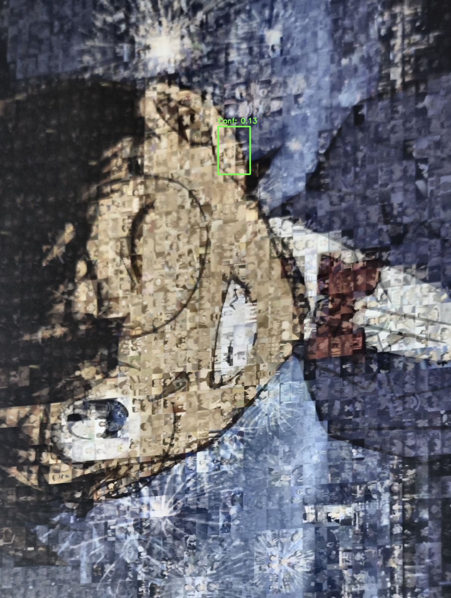
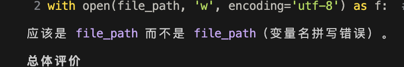
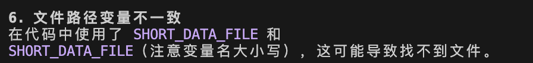

记一次和AI合作搞自动化小软件
嗯，最初大概是半个月前吧，当时想起来用AI去vibe coding做一个用AI自动分类浏览器收藏夹的东西，后来就想这个AI的 vibe coding还能做什么呢？能帮我完成哪些我自己做不了的？如果说我是一个纯白嫖的免费用户的话。
实验工具：QWEN-CODE、vscode + ROO + 免费api 目标：让CLI完全自主完成整个软件的开发
最开始想的很简单。就是给他需求，然后不断pua他，让他改让他优化让他实现目标，当讨厌的项目经理 我和我老婆经常拼图，找碎片找到烟花，所以第一个目标就是让他做一个自动化拼图碎片位置查找，我们就可以按图索骥了。 然后他就开始OpenCV之类的开始搞预处理、轮廓检测，SIFT、SURF 、ORB 特征提取。搞单应性变换（Homography）去矫正包装盒原图。像是公司的ppt高手方案吹的一套一套，结果是一塌糊涂。 我不动脑春push是没啥长进，翻来覆去就那一套，甚至相同的变量名改过来改过去。感觉再怎么push大概他也就是这个水平了。 我大概琢磨了一下，识别出来拼图碎片这个事情，空口给他描述确实是一个很难的事情，我也不想单独炼个模型。毕竟是想轻松简单不是想给自己找麻烦，而且我对cv领域可以说一窍不通。于是大概想了一个方法就是先借免费多模态大模型之力让他先粗定位一下碎片或者目标图在哪（当然了，既然是一毛不拔，这里也是免费api），然后让工具在裁定的这个区域内再进行识别，就能大幅降低难度了。 当然了，明确的告诉他工作流程，他能很快的把框架打出来， 工具很快就具有了先通过API访问大模型，然后根据返回的坐标，进行初步裁剪，然后在用一些传统cv方法进行下一步的定位和裁剪的能力。接下来的话，其实我们大概有2个东西要定位，一个就是我们拍的拼图外盒的整图，一个就是我们的某一块小碎片。
这个工作流最开始对整图的判断倒是还准，可能这对于免费大模型的粗定位来讲，挑战不是特别的大，但是仍然会有很多不必要的区域被纳进来。一般来讲，这都是一个在透视下变形之后的矩形，所以我一些传统的识别方法倒是能够进一步的把要去校正和框出来。虽然现在效果不是很完美，但是大体上还算能用的边上，我也多裁一点也没有关系，我们先把工作流跑通。
另一个问题就是碎片了，我测试的时候这个碎片图像其实在整幅图里边占比是比较小的，而且我们实际使用的时候只要你不是说拿碎片硬往镜头怼的特别近的话，其实本身碎片啊不可能像盒装的一样占那么大。而且本身碎片可能表面特征也不是很明显，然后大模型返回来的粗定位往往是真的非常粗，这个时候基本上比如说我，用手拿着碎片拍照片，以后返回来粗定位之后的图基本还会包含在我的整只手。其实我没有什么好办法，只是让cli去根据碎片边缘的特征去提取目标区域。因为这个时候我觉得我们可能唯一能利用的特征就是拼图碎片，这种类似于四叶草或者凹陷的边缘特征了。这个时候告诉大模型，让他不断的去调整算法，然后去识别判断，并且用他的多模态能力闭环验证自己到底是不是一块裁剪后的拼图碎片，效果自然是不尽人意，很多次他只留了我的一个指甲盖，然后碎片给他截了，一点都不剩。我手动的裁出来一张标准答案，让他持续去对照这个标准答案调整算法，直到它能够正确的把这个碎片搞出来。当然，有时候可能是Prompt没写好，他甚至搞成了作弊行为，然后直接按照这个模板去图上找到对应区域，然后把这个对应区域截下来，然后当做一个结果的输出，所以当他真正输出一个正确的图形以后，我还要把我之前提供的标准答案以及他上次输出结果删除，然后再来一遍。经过几轮迭代，终于有大概的雏形了。对于一些碎片可能能够裁剪个八九不离十，基本视野内就只剩下碎片了。但还有很多碎片，它最多可能周围还保留了有一圈多的空间，大概有八九个碎片那么大的一张图。这个时候其实又不太好搞了，所以我现在考虑的是能不能这里再插入一个AI抠图AI抠图，把背景抠掉这个碎片，这样的话接下来cv方法不是很容易能把碎片找出来的吗？  当然了，他自己实现的效果很差，loftr模型半天不会下又给我回去了。不过也罢我寻思着之前有样本能裁剪的很好，不如先死马当作活马医，匹配试试。 结局自然还是匹配的很差。当然我知道这并不是一个简单的事情，可是这好像也是在说，能让ai做的事情，至少自己应该知道怎么做。作为生成式模型，可能更适合的还是重复造轮子而不是做新轮子。
接下来说另一个尝试，欧卡有个开源自动驾驶项目，ets2la。大概框架就是拿到游戏的地图数据做高精地图，找出车道中心线，然后控制自车去追踪这个中心线。控制器做的很直接，结果就是效果并不是很好，超调或者震荡的问题时常发生，偏差大的时候还有方向盘猛打的情况。作为一个搞规控的，自然想把他的规划和控制都改改。
首先是我自己作为下游来做一个 PID 或者 MPC。和刚才所说的 CV 不一样的是，这个我真知道怎么做。那么可以首先让 CLI 快速读一下开源项目的源码，看下软件的接口怎么写，然后把原来的旧控制器的代码复制一份，开始魔改成新的控制器。这个过程中倒也不用我真的去重写一个 MPC，只需要慢慢跟 AI 描述，然后帮它稍微改一改，顺利得多。
所以我觉得，至少从免费的 Vibe Coding 而言，它提供的机会可能并不是纯依赖 AI 就可以做出来一个全新的东西。如果我们自己并不知道怎么做，稍微超出一些基础知识的范畴，可能它就搞不定了，我们也不知道怎么去指导它。但是如果你本身就知道怎么做，它可以很快地代替你来实现。
还有就是，比如 CLI 写这个控制器，它提供了一种机会：以前的话，我们的软件基本是开发成什么样就用什么样；而对于现在来讲，每个人都可以对软件进行自己的客制化，就像之前的客制化键盘一样。基本的如让你把工具改好，或者写一些漂亮的页面，它是没有问题的。
那么就有了另一个尝试。我之前在 GitHub Pages 上做 Hexo 博客，那天看到有人在 Obsidian 里面把玩过的游戏做成卡片展示样式，弄了那么一个页面。我想在我的 Hexo 博客里也实现一个，虽然我完全不懂网页，不管是 JS 还是 CSS 我都不懂，但 AI 懂，这个时候正合适让它来做我的“客制化工程师”。
这种相对而言比较标准的流程，它很快就给我做出了 Demo。每次 Generate 的时候会自动刷新游戏展页的内容，我还让它把我以前写的一些记录自动化地整理到现在的元数据上，它也搞了一个自动化脚本让我本地 Run 一下。
当然，效果也还是很一般的，会有各种各样的问题。比如有些链接打不开，或者找的是竖版卡片，还是需要人工精修。这有点像自动驾驶：虽然泛化性和拟人性做得非常好，但最后总得搞一些后处理去用规则兜底，要不然规划轨迹冷不丁给你画个“麻花”就完蛋了。
不过到细节沟通的时候，它还是总让我脑溢血到想骂人，我现在非常理解那些能和导航吵起来的人。
所以我还是觉得，对待它就像对待刚招进来的应届生小学徒一样：有明确的架构告诉它改哪、怎么改，它就搞定得很快，而且比人做得好得多；但如果我没有整体框架，给它一个抽象程度比较高的标准，可能就会比较麻烦。
反正就算有这么多问题，有它还是比自己一个人瞎搞效率要高得多。The more you use, the more you save。但是对个人来讲，用免费的vibe coding来实现庞大的工程似乎还是遥不可及。
付费版当时用得最多的就是工作时公司买的 Cursor。读代码的能力非常非常强，基本上我只需要像使唤“牛马工程师”一样不断告诉它看哪里、一起分析就行了，感觉像是有了一个结对编程的伙伴。在已有的代码框架内让他修修补补，写写或回回review的能力远超我了，只要我能给他下达正确的任务。每天都在怀疑我们以后应该做什么呢？大家都去做项目经理吗？

